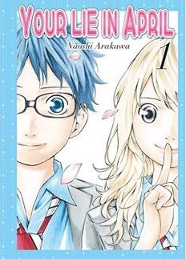
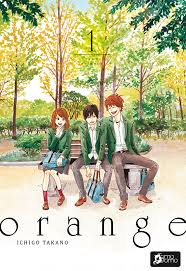

Your Lie In April
A los 11 años, Kōsei Arima es un virtuoso del piano.
Pero cuando su madre muere tras una larga enfermedad,
Kōsei pierde por completo la habilidad de tocar.
Años más tarde, conocerá a Kaori, una violinista cuya
manera de entender e interpretar la música es
totalmente opuesta a la suya.
Una historia que te llega al alma con un cariño enorme
a los personajes y a todo su mundo

Orange
El primer día de clase, Naho, una chica de 16 años,
recibe una misteriosa carta de quien dice ser su yo
del futuro, en la que se predice de forma exacta
cada cosa que está a punto de pasarle. Además,
la remitente le aconseja no llevar a cabo
determinadas acciones.

One Piece
narra la historia de un joven llamado Monkey D. Luffy,
que inspirado por su amigo pirata Shanks, comienza un
viaje para alcanzar su sueño, ser el Rey de los piratas,
para lo cual deberá encontrar el tesoro One Piece dejado
por el anterior rey de los piratas Gol D. Roger.

Look Back
cuenta la historia de Fujino, una estudiante de cuarto grado
que se encuentra dibujando una tira cómica para una de las
secciones del periódico escolar. El estilo artístico y el
talento de esta joven a la hora de dibujar hacen que se
convierta en el centro de atención de toda su clase. Sin embargo,
la situación cambia cuando aparece Kyomoto, otra artista del periódico
que con su impresionante talento opaca totalmente a Fujino.

Fire Punch
Situada en un mundo en declive repleto de nieve, hambre y
locura por culpa de la poderosa Bruja del Hielo, la historia
de Fire Punch nos presenta a dos hermanos, Agni y Luna, que
poseen habilidades sobrenaturales conocidas como «bendiciones».
Los dos hermanos tienen la capacidad de regenerar sus cuerpos,
pero ahí fuera hay demasiados peligros como para creer que esta
habilidad es más bien una maldición.

My Hero Academia
Estamos en un mundo donde abundan los superhéroes
(y los supervillanos). Los mejores humanos son
entrenados en la Academia de Héroes para optimizar
sus poderes. Entre la minoría normal, sin poder alguno,
aparece Izuku Midoriya, dispuesto a ser una excepción y
formarse en la Academia.

Chainsaw Man
Denji es un joven atrapado en la pobreza extrema,
que trabaja para saldar la deuda de su padre fallecido
(mediante su suicidio) con la Yakuza trabajando como
Devil Hunter, con la ayuda de su fiel compañero canino,
hermano del alma y también conocido como el Demonio
Motosierra, Pochita.

Jujutsu Kaisen
La historia gira en torno al estudiante Yuji Itadori,
quien se une a una organización secreta de hechiceros
para matar a una poderosa maldición llamada Ryōmen Sukuna
tras convertirse en su anfitrión luego de comerse uno de
sus dedos, va a la escuela de hechizeria y aprende a
manejar y controlar la energia maldita que ahora posee,
y se dedica a exorcizar maldiciones junto a sus compañeros.

Dragon Ball
las aventuras de Gokū, un guerrero saiyajin, experto en
artes marciales que en su infancia inicia sus viajes y
aventuras en las que pone a prueba y mejora sus habilidades
de pelea, enfrentando oponentes y protegiendo a la Tierra de
otros seres que quieren conquistarla y exterminar a la humanidad.
Conforme transcurre la trama, conoce a otros personajes que le
ayudan en este propósito.

Kimetsu No Yaiba
Tanjirō Kamado es un adolescente cuya familia fue cruelmente
asesinada por un Demonio el cual convirtió a su hermana
Nezuko en una de estas criaturas, obligando a Tanjirō a
emprender un viaje para cazar a estos seres y de paso ayudar
a su hermana a recuperar su humanidad.